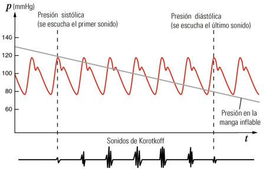

<html>
<head>
<title>MECANICA DE FLUIDOS, G20_52, fisica online, ejercicios resueltos</title>
<meta http-equiv="Content-Type" content="text/html; charset=UTF-8" />
<meta name="keywords" content="problemas resueltos, ejercicios resueltos, cbc, fisica, biofisica, fluidos, liquidos, gases, bernoulli, poiseuille, viscosidad, ideales, viscosos, humedad, difusion, osmosis, nomesalen, no me salen, ricardo cabrera" />
<meta name="description" content="Ejercicios y problemas resueltos, y apuntes teóricos de Fluidos, mecanismos de transporte de fluidos" />
<link rel="stylesheet" href="win_ie.css">
<style type="text/css">
<!--
.style1 {
	color: #3F6386;
	font-weight: bold;
}
.Estilo3 {color: #3F6386}
.Estilo16 {font-size: 16px}
.Estilo19 {font-size: 10px; font-weight: bold; font-style: italic; }
.Estilo26 {font-family: "Times New Roman", Times, serif;
	font-weight: bold;
	font-style: italic;
	font-size: 16px;
}
-->
</style>
</head>

<body bgcolor="#FFFFFF" text="#000000" alink="#000000" leftmargin="0" topmargin="0" marginwidth="0" marginheight="0">
<table align=center width="600" border="0" cellspacing="0" cellpadding="0"> 
  <tr bgcolor="#000000" align="right"> 
<td></td></tr> <tr bgcolor="#BB0000" valign="middle" align="left"> 
<td class="bodytext" height="20"><TABLE WIDTH="100%" BORDER="0" CELLSPACING="0" CELLPADDING="0">
  <TR ALIGN="center" CLASS="menuitem">
    <TD WIDTH="43" height="19" CLASS="menuitem"><A HREF="../../index.html" CLASS="menuitem">&nbsp;<B>home</B>&nbsp;</A></TD>
    <TD WIDTH="5" CLASS="menuitem"><FONT COLOR="#000000">|</FONT></TD>
    <TD width="119" CLASS="menuitem"><strong><a href="index_hdinam.html" class="menuitem">más de hidrodinámica </a> </strong></TD>
    <TD width="9" CLASS="menuitem"><FONT COLOR="#000000">|</FONT></TD>
    <TD width="127" CLASS="menuitem"><strong><a href="../../intro_NMS.html" class="menuitem">otros temas de F&iacute;sica</a></strong></TD>
    <TD width="10" CLASS="menuitem"><FONT COLOR="#000000">|</FONT></TD>
    <TD width="160" CLASS="menuitem"><strong><a href="../../lista_ciruela.html" class="menuitem">lecciones del maestro Ciruela </a></strong></TD>
    <TD width="8" CLASS="menuitem"><FONT COLOR="#000000">|</FONT></TD>
    <TD width="67" CLASS="menuitem"><strong><a href="../../lista_tonterias.html" class="menuitem">tonter&iacute;as</a></strong></TD>
    <TD WIDTH="7" CLASS="menuitem"><a href="../energia/index_energia.html" class="menuitem"></a><FONT COLOR="#000000">|</FONT></TD>
    <TD WIDTH="48" CLASS="menuitem">&nbsp;<B><FONT FACE="Arial, Helvetica, sans-serif"><A HREF="mailto: ricuti@gmail.com" CLASS="menuitem">@</A></FONT><A HREF="../../index.html" CLASS="menuitem"></A></B>&nbsp;</TD>
  </TR>
</TABLE></td></tr> <tr> <td class="bodytext" height="8"><p></td>
</tr> 
<tr align="center"> <td height="1410"> <table width="600" border="0" cellspacing="0" cellpadding="0"> 
<tr class="bodytext"> <td valign="top" width="594" height="1113"> 
<table width="599" border="0" cellspacing="0" cellpadding="0"> <tr> 
  <td height="74" colspan="2" bgcolor="#D7FFFF" class="bodytext"><span class="bodytext"><strong><em><strong><em><strong><strong>&#160; &#160;</strong></strong></em></strong></em>NO ME SALEN<br />
</strong></span><span class="Estilo3"><em class="bodytext "><strong><em><strong><em><strong><strong>&#160; &#160;</strong></strong></em></strong></em>(<strong>PROBLEMAS RESUELTOS   DE BIOF&Iacute;SICA DEL CBC</strong>)</strong></em></span><br />
      <span class="titulograndegris Estilo16"><strong><em><strong><em><strong><strong>&#160; &#160;</strong></strong></em></strong></em>FLUIDOS<br />
      </strong></span><br /> </td>
  <td class="bodytext" rowspan="3" height="74" width="7">&nbsp;</td>
  <td class="bodytext" height="74" rowspan="3" valign="top" width="86"> 
<p></p></td></tr>
  <tr>
    <td height="14" colspan="2" bgcolor="#FFFFFF" class="bodytext">&nbsp;</td>
  </tr> 
<tr> <td width="149" height="45" valign="top" class="bodytext"><p></P>
    </td>
  <td width="357" class="bodytext"><p><strong>52 - Medición de la presión arterial. Para medir  la presión manométrica arterial, máxima y mínima, se usa un tensiómetro (o esfigmomanómetro). </strong></p></td>
</tr>
<tr>
  <td height="180" colspan="2" align="left" valign="middle" class="bodytext"><p><strong>Se coloca un manguito flexible inflable alrededor del brazo y se infla con una perilla de  manera de comprimir la arteria humeral para  cortar momentáneamente el flujo sanguíneo. Cuando desaparece el pulso en la arteria radial  se eleva un poco más la presión del manguito y  luego se abre una válvula que permite descomprimir gradualmente a la arteria. Con un estetoscopio apoyado en el brazo en el momento en que  se reanuda el flujo se escuchan unos golpeteos  sincrónicos con el latido cardíaco, los ruidos de  Korotkoff. La lectura del manómetro conectado  al manguito permite registrar la presión máxima  o sistólica. Con la válvula abierta, la presión del  mango sigue bajando; cuando los ruidos desaparecen es porque la presión interna del mango  llega a ser menor que la diastólica.</strong></p></td>
  <td class="bodytext" height="180">&nbsp;</td>
  <td class="bodytext" height="180" valign="top">&nbsp;</td>
</tr>
<tr>
  <td height="245" colspan="2" align="center" valign="middle" class="bodytext"></td>
  <td height="245" valign="middle" class="bodytext">&nbsp;</td>
  <td class="bodytext" height="245" valign="top">&nbsp;</td>
</tr>
<tr>
  <td height="383" colspan="2" align="left" valign="middle" class="bodytext"><p><strong>a) ¿Por qué se mide en el brazo?  </strong>La presión arterial se suele tomar en el  brazo izquierdo que recibe el bombeo del corazón de forma más directa, a la altura del corazón  para evitar la desviación producto de la diferencia de presión hidrostática.</p>
    <p><strong>b) ¿Por qué se escuchan ruidos apenas se reanuda la circulación y dejan de escucharse cuando la presión es menor que la diastólica?  </strong>La causa exacta de estos ruidos llamados de  Korotkoff es aún objeto de discusión, pero se  cree que la turbulencia es generada por choques  de la sangre contra las paredes del vaso parcialmenteocluido.  Según el gráfico, la presión que se quiere  medir adopta sucesivamente valores de entre  120 mmHg y 70 mmHg. La presión arterial es pulsátil, podemos imaginar pequeños segmentos  cuya presión es de 120 mmHg intercalados con  otros cuya presión es de 70 mmHg. Si la presión  que se ejerce sobre el brazo es superior al máximo la sangre quedará detenida. En tanto que si  es inferior que la diastólica fluirá libremente.  Pero para los valores comprendidos entre ambos  el flujo se vuelve intermitente, ya que solo podrá  pasar la sangre cuya presión exceda a la externa,  quedando detenida la de menor presión. Es el  golpe de ésta contra las paredes del vaso parcialmente cerrado lo que genera el ruido. Cuando el  tensiómetro marque apenas por debajo de la presión sistólica, pasará el segmento de presión alta  pero no podrá hacerlo el de 70 mmHg, chocando  contra las paredes. Sentiremos entonces el primer golpe, indicando el comienzo de la circulación y por lo tanto el valor de la presión sistólica.  A medida que descendemos la presión externa,  sentiremos una sucesión de golpes ya que parte  de la sangre pasará e inmediatamente otra chocará. Hasta que finalmente, al medir por debajo  de los 70 mmHg, toda la sangre fluirá libremente. Entonces, el último ruido nos indicará el valor  de la presión diastólica.</p></td>
  <td class="bodytext" height="383">&nbsp;</td>
  <td class="bodytext" height="383" valign="top">&nbsp;</td>
</tr>
<tr>
  <td height="325" colspan="2" align="center" valign="top" class="bodytext"></td>
  <td class="bodytext" height="325">&nbsp;</td>
  <td class="bodytext" height="325" valign="top">&nbsp;</td>
</tr>
<tr>
  <td height="30" colspan="2" align="left" valign="top" class="bodytext"><strong>c) ¿Cuánto indicaría el manómetro, si durante  la medición el paciente extendiera el brazo verticalmente hacia arriba?</strong> Indicará un valor menor que el que se desea  medir, similar a la diferencia de presión hidrostática  entre el pliegue del codo y el corazón, unos 40 cm,  que implican 30 mmHg menos, por lo tanto medirá presiones entre los 90 mmHg y 40 mmHg.</td>
  <td class="bodytext" height="30">&nbsp;</td>
  <td class="bodytext" height="30" valign="top">&nbsp;</td>
</tr>
<tr>
  <td colspan="2" align="left" valign="top" class="bodytext"><p>&nbsp;</p>    <p><br>
    </p></td>
  <td width="7" class="bodytext">&nbsp;</td>
  <td width="86" valign="top" class="bodytext">&nbsp;</td>
</tr>
<tr>
  <td height="25" colspan="2" align="left" class="bodytext"><p class="epigrafe">Respuestas tomadas de la guía de ejercicios de la Cátedra de Biofísica, CBC, UBA.</p>    </td>
  <td class="bodytext">&nbsp;</td>
  <td width="86" rowspan="3" valign="bottom" class="bodytext"></td>
</tr>

<tr>
  <td height="18" colspan="2" bgcolor="#FFFFFF" class="bodytext">&nbsp;</td>
  <td class="bodytext">&nbsp;</td>
  </tr>

<tr> <td colspan="2" align="center" valign="middle" bgcolor="#CCCCCC" class="bodytext"><table width="85%" border="0" cellspacing="0" cellpadding="0">
  <tr>
    <td class="epigrafe">Algunos derechos reservados. 
  Se permite su reproducci&oacute;n citando la fuente. &Uacute;ltima actualizaci&oacute;n jul-22. Buenos Aires, Argentina. </td>
  </tr>
</table>  </td>
  <td class="bodytext" width="7">&nbsp;</td>
  </tr> 
<tr> <td height="18" colspan="2" class="bodytext">&nbsp;</td><td class="bodytext" width="7">&nbsp;</td>
<td class="bodytext" width="86">&nbsp;</td>
</tr> 
</table></td></tr> </table>
<p></td></tr> 
<tr> <td class="bodytext"><p></td></tr> 
</table>
</body>
</html>
